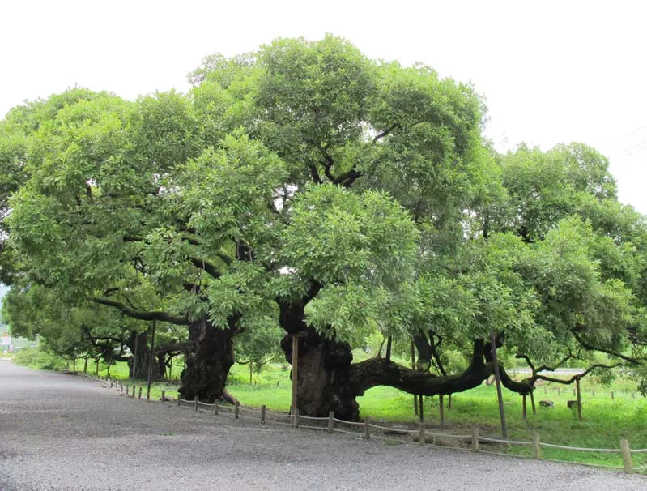
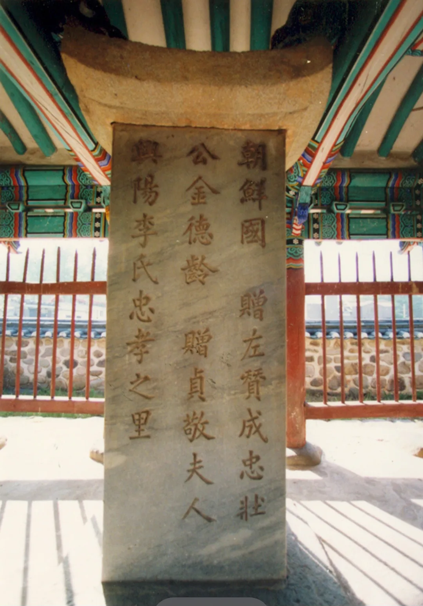
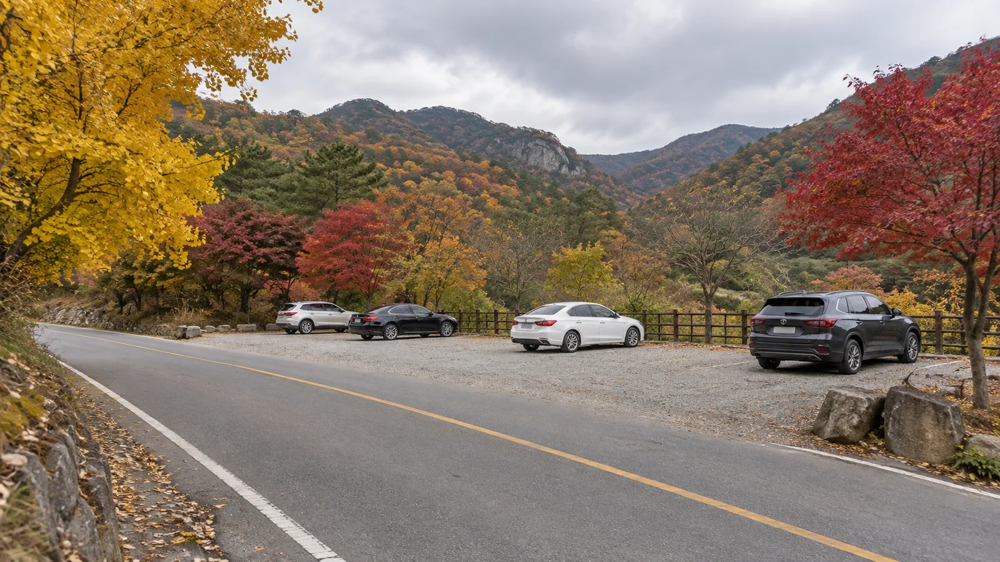
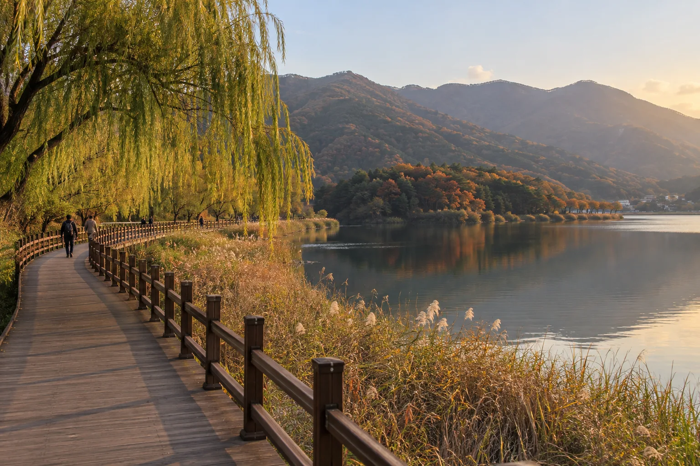
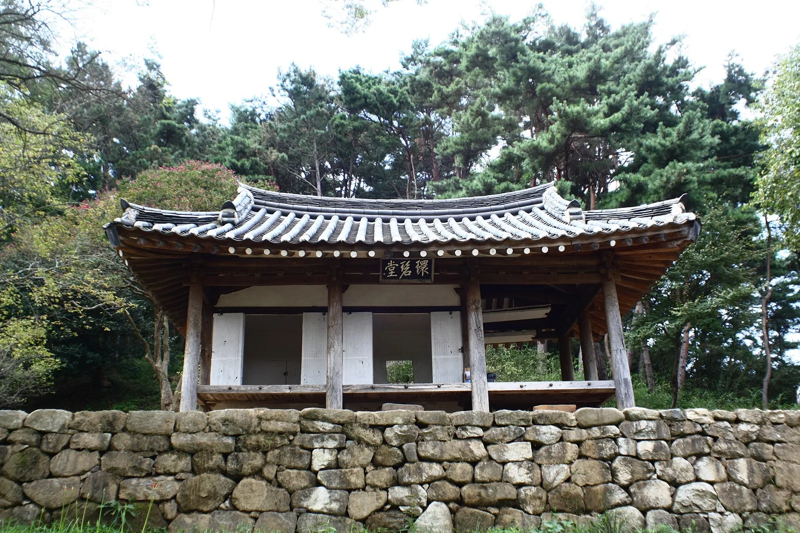
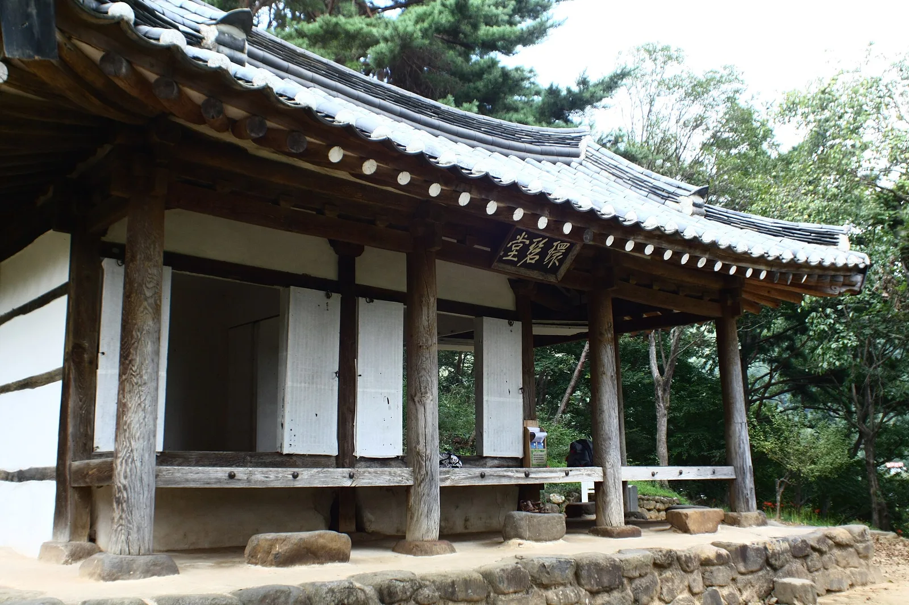
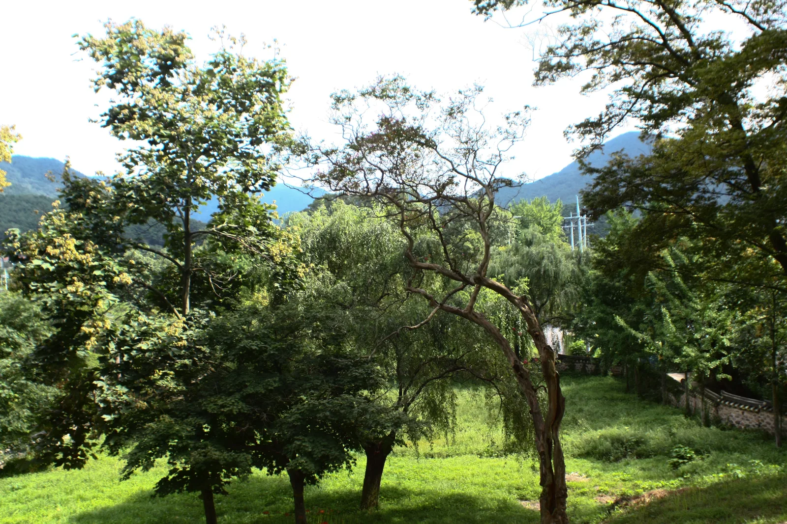
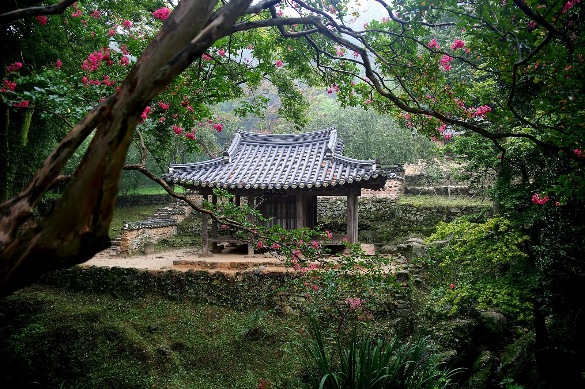
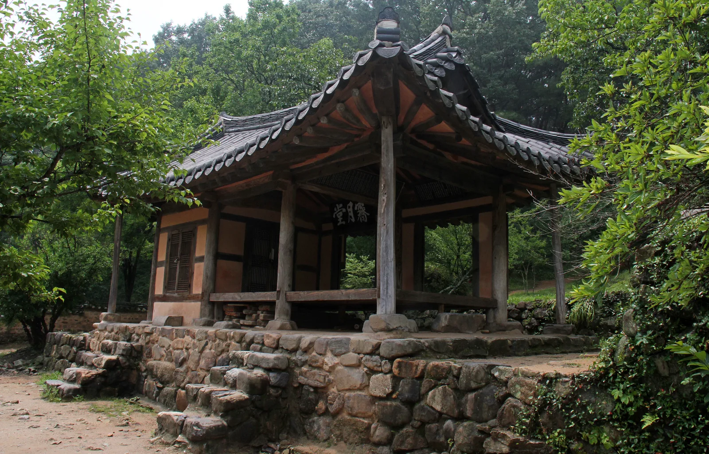
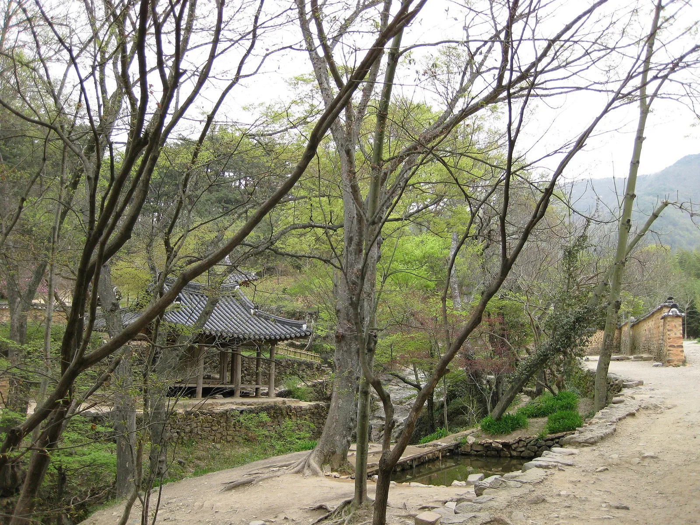

▲ 굵은 밑동에서 가지를 옆으로 넓게 뻗은 광주 충효동 왕버들 군. 가지 곳곳을 지지대가 받치고 있다 사진=국가유산청(공공누리 제1유형), Wikimedia Commons
1. 왜 가볼 만한가 — 무등산 정상 대신 '산자락 끝'
광주 북구 충효동은 무등산 북쪽 자락이 광주호와 만나는 마을이다. 이곳 마을 어귀에는 국가유산청이 천연기념물로 지정한 왕버들 세 그루가 서 있고, 길 건너편으로는 광주호를 따라 조성된 호수생태원이 펼쳐진다. 무등산 서석대·입석대처럼 몇 시간씩 산을 오를 필요가 없고, 입장료도 없다. 도심에서 차로 30분 안팎(교통 상황에 따라 다름)이면 닿는 거리라 반나절, 혹은 퇴근길 해 질 녘 산책으로도 충분하다.
가을에 특히 좋은 이유는 동선에 있다. 왕버들 → 호수생태원 데크길 → 환벽당·취가정 → 식영정·소쇄원으로 이어지는 길이 모두 광주호 둘레 몇 km 안에 모여 있어, 한 번 주차하고 걷거나 짧게 차를 옮기며 '노거수·호수·정자'를 하루에 묶을 수 있다. 무등산 산행 정보는 무등산 서석대·입석대 가을 산행 기사에 따로 정리해 두었으니, 이 글은 '산을 오르지 않는 무등산 북쪽 기슭'에 집중한다.

▲ 무등산 능선에서 내려다본 광주 시가지. 도심과 무등산 자락 사이 거리가 가까워 충효동까지 차로 금방 닿는다 사진=Wikimedia Commons (VaneTrz20, CC BY-SA 4.0)
2. 천연기념물 '광주 충효동 왕버들 군', 무엇이 특별한가
국가유산청 국가유산포털에 따르면 '광주 충효동 왕버들 군(光州 忠孝洞 왕버들 群)'은 2012년 10월 5일 천연기념물로 지정됐다. 지정 당시 번호는 제539호였다(2024년 국가유산 체계 개편 이후 지정번호는 공식 표기에서 빠졌다). 수량은 왕버들 3그루, 소재지는 국가유산포털 표기로 '전남광주통합특별시 북구 충효동 911'이며 관리단체는 북구다. 이 나무들은 광주시 기념물 제16호였다가, 국가 지정 천연기념물로 승격되면서 시 기념물 지정은 해제됐다.
당시 문화재청(현 국가유산청) 보도자료는 이 왕버들 군이 1500년대 말 충효마을의 상징 숲이자 비보림(裨補林, 풍수지리상 지형의 결함을 보완하려고 조성·유지해 온 숲)으로 조성됐다고 설명했다. 그중 한 그루는 '김덕령 나무'로 불릴 만큼 나무에 얽힌 유래와 일화가 잘 전해져 역사·문화적 가치가 크다는 것이 지정 이유다. 수령과 규모 면에서도 이미 천연기념물로 지정된 다른 왕버들보다 앞서고 수형과 수세가 양호하다는 평가를 받았다. 2012년 8월 지정 예고 당시 문화재청은 세 그루의 수령을 430여 년, 높이를 8~13m로 설명했다(수령은 추정치다).
| 항목 | 내용 |
|---|---|
| 종목 | 천연기념물(옛 지정번호 제539호) |
| 지정일 | 2012년 10월 5일 |
| 수량 | 3그루 |
| 소재지 | 북구 충효동(광주호 호수생태원 입구 맞은편) |
| 조성 배경 | 1500년대 말 마을 상징 숲·비보림 |
| 추정 수령·높이 | 430여 년, 8~13m(2012년 지정 예고 당시 문화재청 설명) |
| 이전 지정 | 광주시 기념물 제16호 → 국가 지정 후 해제 |
현장에서 보면 줄기 밑동이 어른 여럿이 팔을 둘러야 할 만큼 굵고, 가지가 땅과 거의 평행하게 옆으로 뻗어 지지대가 받치고 있다. 북구는 부후(썩음) 부위를 정비하는 외과 수술 등 보존 관리를 이어오고 있으니, 울타리 안으로 들어가거나 가지에 매달리는 일은 삼가야 한다.
3. '김덕령 나무'와 충효동이라는 이름
충효동이라는 지명 자체가 임진왜란 의병장 김덕령(1567~1596)에게서 왔다. 김덕령은 이 마을(옛 석저촌) 출신으로, 임진왜란 때 의병을 일으켰으나 1596년 이몽학의 난에 연루됐다는 모함을 받아 옥사했다. 이후 명예가 회복됐고, 1788년(정조 12) 정조가 '충장(忠壯)'이라는 시호를 내리면서 그의 고향 마을 이름을 '충효리(忠孝里)'로 고치도록 했다. 이듬해인 1789년 그 내력을 새긴 비를 세웠고, 1792년 비각을 지었다. 이것이 마을 안에 남은 광주 충효동 정려비각(1985년 광주시 기념물 제4호 지정)이다.

▲ 광주 충효동 정려비각 안의 비석. 김덕령과 부인 흥양 이씨의 이름, 그리고 '충효지리(忠孝之里)'라는 글자가 새겨져 있다 사진=국가유산청(공공누리 제1유형), Wikimedia Commons
정려비는 김덕령 한 사람만이 아니라 부인 흥양 이씨, 형 김덕홍, 아우 김덕보 등 일가의 충·효·열을 함께 기린다. 왕버들 가운데 한 그루가 '김덕령 나무'로 불린다는 점은 국가유산청 지정 자료에도 적혀 있지만, 구체적인 일화는 구전으로 전해지는 것이어서 문헌으로 확인되는 역사와는 구분해 읽는 편이 좋다. 왕버들을 보고 마을 안쪽 정려비각까지 걸어 들어가 보면, 이 버드나무들이 왜 단순한 '큰 나무'가 아니라 마을의 상징으로 지켜져 왔는지 자연스럽게 이해된다.
4. 가는 법·주차 — 자가용 기준
내비게이션 목적지는 '광주호 호수생태원(북구 충효샘길 7)'으로 잡으면 된다. 왕버들 군은 생태원 입구 바로 맞은편에 있어 따로 주차할 필요가 없다. 광주시 관광 안내(오매광주)에 따르면 생태원 주차장은 180대 규모이고, 장애인 전용 주차구역도 있다. 주차요금은 공식 안내에 별도로 표기돼 있지 않으니 방문 전 확인하는 것이 좋다. 같은 안내에는 반려견 동반이 가능하다고 돼 있으니, 데려간다면 목줄과 배변 봉투를 챙기자.

▲ 단풍 든 산 아래 2차로 도로 옆 주차장에 차량 몇 대가 서 있는 가을 오후 이미지=AI 생성
광주 도심에서 충효동으로 가는 길은 크게 두 방향이다. 하나는 북구 산수동 쪽에서 제4수원지를 지나 충장사 앞 송강로를 따라 광주호로 내려가는 길, 다른 하나는 호남고속도로 동광주IC 쪽에서 국도 887번 방면으로 북상하는 길이다. 소쇄원 공식 홈페이지는 동광주IC에서 887번 도로를 타고 약 5.3km 가면 소쇄원에 닿는다고 안내한다. 시내버스 충효187번이 충장사·호수생태원·소쇄원을 모두 지나므로, 단풍철 주차가 걱정되면 버스도 대안이다. 두 길 모두 시 외곽으로 나가면 산자락과 호숫가를 따라 굽은 구간이 이어지므로, 단풍철 주말에는 서행 차량과 자전거, 보행자를 염두에 두고 속도를 낮추는 것이 좋다.
| 항목 | 내용 |
|---|---|
| 주소 | 북구 충효샘길 7(충효동) |
| 운영시간 | 09:00~18:00, 연중무휴 |
| 입장료 | 무료 |
| 주차 | 180대, 장애인 전용 주차구역 있음(요금은 방문 전 확인) |
| 반려견 | 동반 가능(오매광주 안내) |
| 편의 | 관광안내소, 장애인 화장실, 휠체어·유모차 대여, 경사로 |
| 대중교통 | 충효187·충효188번 '광주호수생태원' 정류장 |
| 문의 | 062-613-7892(푸른도시사업소) |
| 반입 제한 | 음식물 반입·흡연·음주 금지, 동식물 채취 금지 |
🚗 운전자 팁
단풍철 주말 오후에는 생태원과 소쇄원·식영정 주차장이 붐빌 수 있다. 오전에 도착해 생태원에 주차하고 걸어서 왕버들·환벽당을 본 뒤, 차를 옮겨 소쇄원으로 이동하는 순서가 주차 스트레스를 줄이는 방법이다. 생태원 운영시간(18시)이 끝나기 전에 차를 빼야 한다는 점도 기억해 두자.
5. 호수생태원 둘러보는 동선
광주호 호수생태원은 2006년 3월 20일 문을 연 약 18만 4,948㎡ 규모의 생태공원이다. 광주호는 1976년 완공된 농업용 저수지로, 생태원은 이 호숫가에 수생식물원·야생화 단지·암석원·생태연못 등을 테마별로 꾸미고 나무 데크와 관찰 데크, 산책로로 이어 놓았다. 무등산권 지질공원 누리집에도 명소로 소개돼 있고, 2024년 10월에는 광주광역시 제1호 지방정원으로 등록됐다. 광주시는 등록 당시 연평균 약 30만 명이 찾는다고 밝혔다.

▲ 버드나무와 억새가 늘어선 호숫가 나무 데크길을 따라 걷는 사람들, 뒤로 단풍 든 산이 노을빛을 받고 있다 이미지=AI 생성
생태원 안에는 버들길·돌밀길·별뫼길·풀피리길·가물치길·노을길 등 이름 붙은 산책 코스가 서로 이어져 있다. 대부분 평탄한 데크와 흙길이라 운동화면 충분하고, 휠체어·유모차 대여가 가능할 만큼 경사가 완만하다. 추천 순서는 이렇다.
| 순서 | 지점 | 포인트 |
|---|---|---|
| 1 | 생태원 주차장 → 왕버들 군 | 입구 맞은편, 세 그루 밑동과 가지 뻗음 관찰 |
| 2 | 충효마을 안쪽 정려비각 | '충효리' 지명 유래 확인 |
| 3 | 생태원 테마정원·생태연못 | 수생식물원, 야생화 단지 |
| 4 | 호숫가 데크·관찰 데크 | 물가 버드나무와 억새, 무등산 능선 조망 |
| 5 | 환벽당·취가정(차로 이동 또는 도보) | 호남 누정문화, 김덕령 추모 정자 |
코스가 여러 갈래라 걷는 시간은 고르기 나름이지만, 왕버들과 정려비각까지 묶는다면 2시간 안팎을 잡아 두면 여유롭다. 생태원 안에는 음식물 반입이 금지돼 있으니 간식은 차에서 해결하고 들어가는 편이 낫다.
6. 가을 계절 팁 — 언제, 어떻게 걸을까
호숫가 산책은 해가 기울 무렵이 운치 있다. 다만 생태원은 18시에 문을 닫으니, 노을을 보려면 해가 짧아지는 10월 말 이후를 노리거나, 폐장 시각보다 여유 있게 들어가야 한다.
- 9월 말~10월 초: 아직 초록이 짙은 왕버들 잎, 억새가 피기 시작하는 시기. 한낮은 덥지 않고 걷기 좋다.
- 10월 중하순: 호숫가 억새와 산자락 단풍이 겹치는 시기. 주말 오후 주차 혼잡이 커진다.
- 11월: 왕버들 잎이 노랗게 바래고, 환벽당·소쇄원 주변 단풍이 짙어진다. 해가 일찍 져 체감 기온이 빠르게 떨어지니 겉옷을 챙기자.
호숫가는 바람이 불면 도심보다 쌀쌀하게 느껴질 수 있다. 차 안에 얇은 바람막이 하나를 넣어두면 요긴하다.
7. 주변 연계 코스 — 가사문화권과 충장사
광주호 둘레는 조선 중기 누정(樓亭)과 가사 문학이 꽃핀 이른바 '가사문화권'이다. 다만 한 동네처럼 붙어 있어도 행정구역은 둘로 나뉜다. 2026년 7월 1일 광주광역시와 전라남도가 통합해 전남광주통합특별시가 출범한 뒤, 국가유산포털과 광주시 관광 안내는 소재지를 '전남광주통합특별시 북구', '전남광주통합특별시 담양군'으로 표기하고 있다. 즉 왕버들·호수생태원·환벽당·취가정·충장사는 전남광주통합특별시 북구, 식영정·소쇄원은 같은 특별시 담양군 가사문학면이다. 일부 누리집(소쇄원 홈페이지 등)에는 아직 '전라남도 담양군 남면' 같은 옛 표기가 남아 있으니 내비게이션에는 도로명 주소를 넣는 편이 확실하다. 내비게이션 주소나 안내 문의처가 서로 다른 이유다.
| 명소 | 행정구역 | 지정·특징 |
|---|---|---|
| 환벽당 일원 | 북구 충효동 | 명승(2013년 지정), 김윤제가 지은 정자 |
| 취가정 | 북구 충효동 | 김덕령 추모 정자, 후손이 건립 |
| 충장사 | 북구 금곡동(송강로 13) | 김덕령 사당, 1975년 건립 |
| 식영정 일원 | 담양군 가사문학면 | 명승(2009년 지정, 2만 8,039㎡), 정철 「성산별곡」의 무대 |
| 소쇄원 | 담양군 가사문학면(소쇄원길 17) | 명승(2008년 지정), 조선 중기 대표 민간 원림 |
환벽당·취가정 (북구)
국가유산청에 따르면 '광주 환벽당 일원'은 2013년 11월 6일 명승으로 지정됐고 면적은 2만 6,832㎡다. 조선 중기 김윤제(1501~1572)가 벼슬에서 물러나 후학을 기르며 지낸 곳으로, 송강 정철이 이곳에서 김윤제를 만나 가르침을 받았다는 이야기가 전한다. 환벽당 아래 물가에는 두 사람이 처음 만났다는 '조대(釣臺)'가 남아 있다. 환벽당 앞 언덕의 취가정은 김덕령을 추모하려 후손들이 세운 정자로, 김덕령의 억울함을 담은 노래 '취시가(醉時歌)'에서 이름을 따왔다.

▲ 돌 축대 위에 올라앉은 환벽당. 정자 뒤를 소나무 숲이 감싸고 있다 사진=Wikimedia Commons (Dalgial, CC BY-SA 3.0)

▲ '環碧堂' 현판이 걸린 환벽당 측면. 창호를 들어 올려 걸어 둔 모습이다 사진=Wikimedia Commons (Dalgial, CC BY-SA 3.0)

▲ 환벽당 앞마당에서 내다본 풍경. 나무 사이로 무등산 자락 능선이 이어진다 사진=Wikimedia Commons (Dalgial, CC BY-SA 3.0)
환벽당·취가정·식영정은 별도 관람료나 관람시간이 공식 안내에서 확인되지 않는다. 정자 마루는 문화유산이므로 출입 가능 여부는 현장 안내판을 따르고, 방문 전 북구·담양군에 확인하는 것이 좋다.
식영정·소쇄원 (담양군 가사문학면)
호수 건너편 담양 쪽으로 넘어가면 식영정이 있다. 국가유산청에 따르면 '담양 식영정 일원'은 2009년 9월 18일 명승으로 지정됐다. 1560년(명종 15) 김성원이 지은 정자에 장인 임억령이 '식영(息影, 그림자가 쉬는 곳)'이라는 이름을 붙였고, 정철이 이곳에서 「성산별곡」과 '식영정 20영' 등을 남겼다. 바로 옆에 한국가사문학관이 있어 함께 둘러보기 좋다(관람시간·요금은 방문 전 확인).
조금 더 들어가면 소쇄원이다. 양산보(1503~1557)가 조성한 조선 중기 민간 원림으로, 1983년 사적으로 지정됐다가 2008년 명승으로 재분류됐다. 소쇄원 공식 홈페이지에 따르면 관람료는 어른 2,000원, 청소년·군경 1,000원, 어린이 700원이며 담양군민·65세 이상·국가(참전)유공자·장애인·미취학 아동은 무료다. 관람시간은 3·4·9·10월 09:00~18:00, 5~8월 09:00~19:00, 11~2월 09:00~17:00이다. 20명 이상 단체는 어른 1,600원으로 할인되고, 무료 대상은 신분증을 확인한다(문의 061-381-0115).

▲ 배롱나무 꽃가지 사이로 보이는 소쇄원 광풍각. 계곡 물가 축대 위에 정자가 앉아 있다 사진=Wikimedia Commons (Kim Dae Jeung, CC0)

▲ 소쇄원 안쪽 언덕의 제월당. 돌 축대 위에 앉아 광풍각과 계곡을 내려다본다 사진=Wikimedia Commons (Korea.net/KOCIS, CC BY-SA 2.0)

▲ 봄철 소쇄원의 흙길과 연못, 정자. 가을에는 같은 길이 단풍과 대숲으로 물든다 사진=Wikimedia Commons (UNC-CFC-USFK, CC BY 2.0)
담양까지 온 김에 드라이브를 이어가고 싶다면 담양 메타세쿼이아길 기사도 참고할 만하다. 다만 가사문화권에서 담양읍 쪽까지는 거리가 있으니 반나절 일정이라면 소쇄원에서 마무리하는 편이 무리가 없다.
충장사 (북구 금곡동)
도심으로 돌아가는 길에는 김덕령을 모신 충장사가 있다. 광주시 관광 안내에 따르면 충장사는 북구 송강로 13에 있으며 1975년 세워졌다. 영정과 교지를 모신 사우, 김덕령의 묘에서 나온 옷 등을 전시한 유물관이 있고, 묘소는 사당 뒤편에 있다. 관람시간은 하절기 09:00~18:00, 동절기 09:00~17:00이며 연중 개방하고, 주차장이 있다(문의 062-266-6355). 충효동 왕버들과 정려비각에서 시작한 '김덕령 이야기'를 여기서 마무리하면 동선이 깔끔하다.
8. 반나절 코스로 정리하면
오전 10시 전후 호수생태원 주차장에 차를 세우고, 입구 맞은편 왕버들과 마을 안 정려비각을 먼저 본다. 이어 생태원 데크길을 한 바퀴 돌고, 환벽당·취가정을 들른 뒤 차를 옮겨 담양 쪽 식영정과 소쇄원을 본다. 돌아오는 길에 송강로를 따라 충장사에 들르면 도심까지 자연스럽게 이어진다. 전체 이동 거리는 길지 않지만, 명소마다 주차장이 따로 있어 '주차-걷기-이동'을 반복하는 구조라는 점을 알고 가면 편하다.
✅ 방문 전 체크리스트
· 내비게이션 목적지: 광주호 호수생태원(북구 충효샘길 7), 왕버들은 입구 맞은편
· 생태원 09:00~18:00 연중무휴, 입장 무료, 주차 180대(요금은 방문 전 확인), 반려견 동반 가능
· 생태원 내 음식물 반입·흡연·음주 금지
· 왕버들은 천연기념물 — 울타리 안 출입·가지 접촉 금지
· 소쇄원 어른 2,000원, 9~10월 09:00~18:00(11월부터 17:00 마감)
· 식영정·소쇄원은 전남광주통합특별시 담양군, 나머지는 북구 — 문의처가 다름, 내비게이션은 도로명 주소로
· 단풍철 주말은 오전 도착, 굽은 외곽 도로 서행